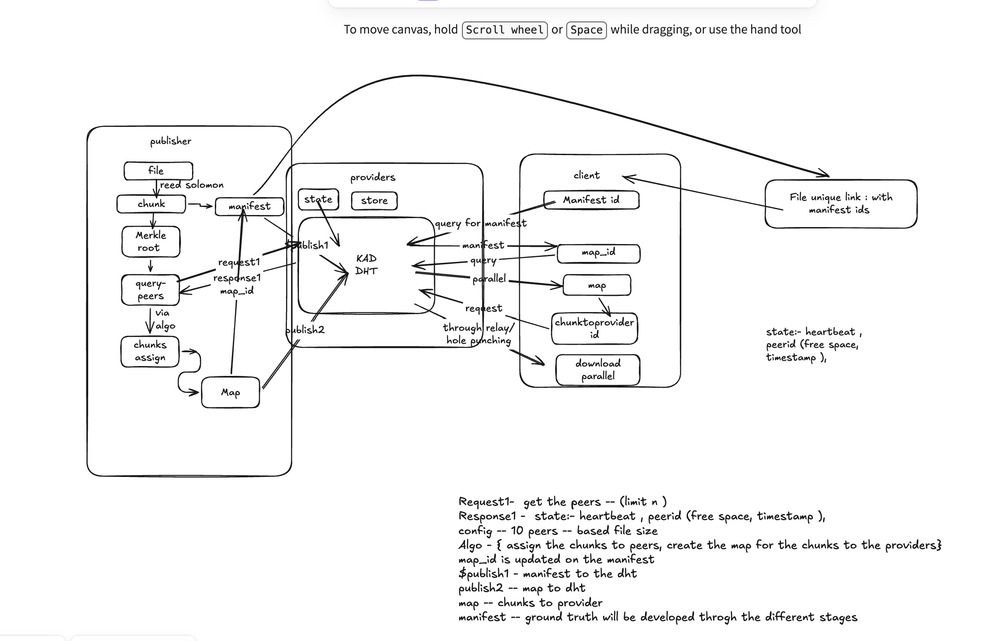

CIPHER
Decentralized Content Distribution over P2P Networks
Presented by: Adarsh Kumar
Academic Project • DevlUp Labs • IIT Jodhpur
Traditional Content Delivery Networks (CDNs) are highly centralized, owned by a small group of large providers, which makes them points of failure and control.
CIPHER is designed to turn arbitrary files into cryptographically verifiable, erasure-coded shards distributed across untrusted nodes, replacing the middleman with mathematics.
Let's move into the core problem statement we are addressing.
Problem Statement
The Challenge of Reliable Distributed File Transfer
- Centralized Bottlenecks: Outgoing server pipes saturate quickly as client request counts grow.
- Single Point of Failure: Outages at central data nodes result in complete service interruptions.
- NAT & Firewalls: Over 60% of peer nodes reside behind restrictive router walls, blocking direct connections.
- Peer Churn & Poisoning: Distributed nodes join and leave unpredictably, and untrusted peers may modify data.
Centralized systems struggle with bandwidth saturation and single-node vulnerabilities.
On the other hand, moving to P2P networks brings severe issues: NAT boundaries block 60%+ of connections, nodes drop offline (churn), and peers can return poisoned data.
CIPHER is structured specifically to address these issues.
Design Goals
Four Pillars of a Robust P2P CDN
1. Decentralization
No Central Control
Shards are placed on distinct independent providers across the network, avoiding reliance on any single node.
2. Reliability
Self-Healing Deck
Peer dropouts and network latency spikes must not terminate or stall the overall download process.
3. Integrity
Proof over Trust
Strict ciphertext content-addressing ensures data is verified on receipt, blocking malicious poisoning.
4. Efficiency
Swarmed Retrieval
Parallel channels query multiple seed hosts concurrently to saturate the client's network path.
First, decentralization: we distribute file shards across multiple peers.
Second, reliability: a downloading node should not care if any single peer drops offline.
Third, integrity: using cryptographic hash checks so that peers can't poison our files.
Fourth, efficiency: swarmed downloading where we download different parts of a file concurrently from separate peers.
Fifth, resilience: utilizing background NAT hole punching so standard home networks can connect directly without server relays.
System Overview
From One File to Distributed Content
- File Chunking: Monolithic file is split into 256KB segments.
- Erasure Redundancy: Reed-Solomon creates additional parity shards.
- Swarm Placements: Shards are stored across distinct nodes.
- Parallel Retrieval: Client downloads shards concurrently from multiple online nodes.
Instead of keeping a file on a central server, the publisher splits it into Data Chunks.
Next, we run these chunks through Reed-Solomon erasure coding, which yields Data and Parity Shards.
These shards are distributed across P2P storage providers.
A client downloads these shards in parallel from multiple providers at once.
Finally, the client verifies each shard's hash, decodes them back to the original chunks, and reconstructs the file. Note that reconstruction succeeds even if some providers fail, as long as we retrieve the minimum required shards.
Core Features
Ingestion • Discovery • Swarming • Failover
1. Prepare
Splits files, encrypts via XChaCha20, hashes via SHA-256, and generates Reed-Solomon shards.
2. Discover
Queries Control Plane locations to build the client-side ChunkProviderMap execution plan.
3. Transfer
Concurrently queries multiple providers over upgraded DCUtR direct paths in a lock-free queue.
4. Recover
Handles node failovers by switching providers, resuming session logs, and decoding erasure blocks.
Stage 1 is Content Preparation: generating encrypted shards and a manifest describing the file.
Stage 2 is Discovery: querying the decentralized Control Plane to find peer addresses and building an execution plan mapping shards to source nodes.
Stage 3 is Transfer: our concurrent scheduler worker pool spinning up multiplexed connections over libp2p and requesting content.
Stage 4 is Recovery: correcting errors by switching providers on timeouts, resuming interrupted downloads from session records, and reconstructing data using erasure coding.
Architecture
Control Plane and Data Plane Division
Control Plane
Manages metadata: Registries (Provider, Manifest, and Placement maps) resolved via Kademlia DHT.
Data Plane
Manages raw transfer: libp2p hosts, Circuit v2 Relay fallback, DCUtR hole punching, and the stateless Chunk Protocol.

The Control Plane answers 'where is the data?'. It coordinates provider, manifest, and placement mapping registries via a Kademlia DHT. This layer is currently in the design and planning expansion phase.
The Data Plane answers 'get the data'. It manages transport, relay fallback, DCUtR hole punching, protocol stream handlers, and content verification. This plane is fully implemented and tested.
Let's look at how data is ingested and prepared in Slide 7.
Content Preparation
Chunking • Reed-Solomon Encoding • Manifest • Merkle Root
- Monolithic splitting: File is chunked into uniform blocks (default 256KB).
- Independent Encryption: Blocks encrypted via XChaCha20-Poly1305, enabling random access.
- Erasure expansion: Reed-Solomon coding produces Data + Parity Shards stored on providers.
- Structure binding: Merkle Tree root is computed to verify shard integrity.
First, the Chunker divides the file into 256KB blocks.
Second, we encrypt each chunk independently using XChaCha20-Poly1305 and hash it with SHA-256. Independent chunk encryption enables parallel random-access fetching and out-of-order decryption.
Third, Reed-Solomon encoding outputs data and parity shards. Providers store shards rather than monolithic chunks.
Fourth, we compute a Merkle Tree over these shards to produce the Merkle Root, and package this data into an immutable manifest capability file.
Kademlia DHT
Decentralized Metadata and Discovery Substrate
- Discovery Substrate: Kademlia is not a file database; it is a peer address routing substrate.
- Reference records: Maps identifiers to provider lists and manifest details; does not store actual file data.
- Location resolution: Translates
ShardIDto a list of candidate host Multiaddresses.
Instead, Kademlia DHT acts as a decentralized metadata/discovery substrate.
It stores small records: ProviderRecords (peer addresses), ManifestRecords (erasure specifications), and ShardProviderRecords (mapping shard hashes to peer IDs).
The DHT stores references and metadata, while actual large file payloads remain strictly hosted on the data plane providers.
Let's talk about shard placement next.
Shard Placement
PlacementMap vs. ChunkProviderMap
PlacementMap
Publisher Blueprint
- Generated during file publication.
- Defines the static distribution plan.
- Maps shard hashes to target provider nodes.
- Stored on the Control Plane.
ChunkProviderMap
Client Execution Plan
- Generated dynamically by the downloader.
- Adapts to active, online provider nodes.
- Maps required segments to online peers.
- Ensures run-time transfer routing.
The PlacementMap is a global registry record created by the publisher. It maps shards to designated storage providers.
The ChunkProviderMap is an execution plan created locally by the downloading client. It maps each required shard to the specific, online peers discovered at download time.
This dynamic mapping protects the client from outdated placement tables if nodes disconnect.
P2P Network
libp2p • Relay • DCUtR • Direct Connectivity
- libp2p Host: Manages persistent Ed25519 identity keys and TCP/QUIC stream multiplexing.
- Circuit v2 Relay: Coordinates transient connection relays to route around NAT firewalls.
- DCUtR Upgrades: Coordinate background UDP simultaneous dial triggers to bypass NAT.
- Direct Transport: Streams fallback to direct connection paths automatically.
We use persistent Ed25519 keypairs stored in system configuration paths so that node identities (PeerIDs) remain constant across restarts.
For connectivity, we fallback to public Circuit v2 relays to punch initial tunnels through NATs.
Simultaneously, we run the DCUtR protocol. DCUtR attempts to establish direct socket connections in the background, upgrading the connection to a high-speed direct transport path without interrupting the transfer.
Chunk Protocol
Stateless Request / Response Stream Operations
- Protocol ID: Registered as
/cipher/chunk/1.0.0over multiplexed streams. - Framed Envelopes: Uses size-prefixed message frames (capped at 2MB) for memory protection.
- Stateless Exchange: Handlers perform strict request/response data pushes, decoupling network state from application logic.
All messages are encapsulated in a unified symmetric envelope containing a version, message type, and byte payload.
We send messages as size-prefixed frames capped at a maximum size of 2MB to prevent buffer overflow attacks.
The message types include manifest request/response, chunk request/response, and positive or negative error acknowledgements. It is fully stateless, keeping complex transfer logic inside the client application modules.
Parallel Download
TransferManager & Scheduler Coordination
TransferManager
Session Orchestration
- Owns the lifecycle of file downloads.
- Persists session progress locally using a Boolean bitset.
- Ensures client never re-downloads completed data blocks on crash.
Scheduler
Work Allocation
- Maintains a lock-free queue of pending shard retrieval tasks.
- Spins up concurrent worker threads to query distinct target peers.
- Recycles tasks back to the queue on peer disconnect or timeout.
The TransferManager initializes session states and tracks progress using a simple boolean bitset. This bitset determines exactly which shards are done and which are missing.
The Scheduler schedules missing shards into a lock-free queue.
Concurrent background worker routines pop tasks from the queue and send `/cipher/chunk/1.0.0` requests to online target peers concurrently. If a peer timeouts, the worker reports the failure to the scheduler, which recycles the task to be processed by a different peer.
Security & Integrity
Proof over Trust Security Model
Confidentiality
XChaCha20-Poly1305
Independent block encryption enables random-access, multi-peer swarming decryption. Manifest details are publicly visible, but decryption keys remain private to consumers.
Integrity
Content-Addressing
Shard addresses are derived from ciphertext hashes. SHA-256 checks run immediately on shard arrival; corrupt data is rejected before writing to local disk.
Structure
Merkle Verification
Merkle tree structures verify that downloaded segments belong to the original file. Rogue nodes are blocked from injecting poison filler blocks.
We encrypt chunks using XChaCha20-Poly1305. The decryption keys are kept separate from the public manifest so that nodes store and relay data they cannot read.
For integrity, shards are content-addressed by their ciphertext hashes. The client validates the SHA-256 hash immediately upon block receipt. If a hash mismatch occurs, we drop the data immediately, protecting storage from pollution attacks.
Merkle tree root checks verify that the shard belongs to the original file.
Download Flow
Manifest Resolution → Provider Discovery → Parallel Download
- Bootstrap: Fetch JSON manifest metadata using
ManifestID. - Planning: Query placement records to compile the local
ChunkProviderMap. - Transfer: Concurrent worker routines request shards in parallel streams.
- Reassembly: Validate shard hashes and decode Reed-Solomon blocks to build the original file.
We start with bootstrapping: getting a ManifestID and querying the DHT to fetch the manifest details.
Next is planning: mapping target shards to active online peers to build our local ChunkProviderMap.
Third is swarming: starting parallel fetch routines to pull shards concurrently.
Finally, we run hash checks on each shard, decode Reed-Solomon blocks, and write the reassembled file to local storage. If any chunk is corrupted or incomplete, we reject it and request it again.
CIPHER in Action
End-to-End File Distribution Demo
- File Ingestion: Chunks file, encrypts via XChaCha20, and publishes the manifest.
- DHT Registration: Registers shard locations (PlacementMap) on Kademlia.
- Direct Upgrade: Triggers DCUtR hole punching to bypass NAT barriers.
- Swarmed Retrieval: Concurrent workers download and verify shards.
Here we show the live data flow pathway: the publisher ingests the file, registers shard allocations, Kademlia coordinates location discovery, and the client pulls shards concurrently from separate providers.
On the right, we show actual terminal outputs from a successful integration test. You can see the publisher chunking data, Kademlia routing paths, DCUtR coordinates successfully hole-punching UDP tunnels to providers, parallel scheduler streams active, and final SHA-256 verification passing.
Failure Recovery
Ensuring Fault-Resilient Shard Retrieval
- Dynamic Failover: Connection drops trigger provider switching; the scheduler recycles the task to alternative nodes.
- Interruption Resuming: INTERRUPTED downloads load progress bitsets and fetch only missing shards.
- Reed-Solomon Limit: Decodes data if ANY K out of K+M shards are present. Fails if lost shards exceed parity M.
First, we handle network failures with provider switching: workers monitor transfer loops; if a peer goes offline, we recycle the shard task back to the queue and dial a different provider.
We also support local session resume, loading a bitset of progress so a client never re-downloads completed blocks after a crash.
At the content layer, Reed-Solomon allows reconstruction using any K out of K+M shards. If more than M shards are missing, the file is lost. This defines the clear boundary of our recovery guarantees.
Future Implementations
Scalability • Optimization • Incentives
1. Advanced Scheduling
Implements rarest-first shard scheduling, latency-aware provider selection, and peer reputation scoring to prioritize high-speed nodes.
2. Incentive Engine
Introduces token settlement layers via smart contracts, zero-knowledge proofs of storage, and micro-payment routing channels.
3. Protocol Hardening
Enforces connection limits per node, bounds internal buffer readers to prevent leaks, and audits protocol behavior under network attacks.
First, advanced scheduling: implementing rarest-first algorithms and provider rating metrics to fetch shards more efficiently.
Second, incentives: building a payment layer using smart contracts and micro-channels alongside cryptographic proof-of-storage validations so hosting nodes are fairly compensated.
Third, protocol hardening: adding connection limiters, stream timeouts, and rate limits to defend the P2P transport against memory leaks and DDoS flood attacks.
Team
Building CIPHER
Contributors
Adarsh Kumar
Core Developer
Designed backend execution engines, persistent PeerIDs, and transport protocols.
Mentors
DevlUp Labs
IIT Jodhpur Student Developer Community
IIT Jodhpur CSE Department Project Submission
The project is developed by Adarsh Kumar, focusing on the core backend execution engine, persistent peer identity, and transport protocols.
The work is guided and supported by the DevlUp Labs team at the Indian Institute of Technology Jodhpur.
We are happy to take any questions from the panel.